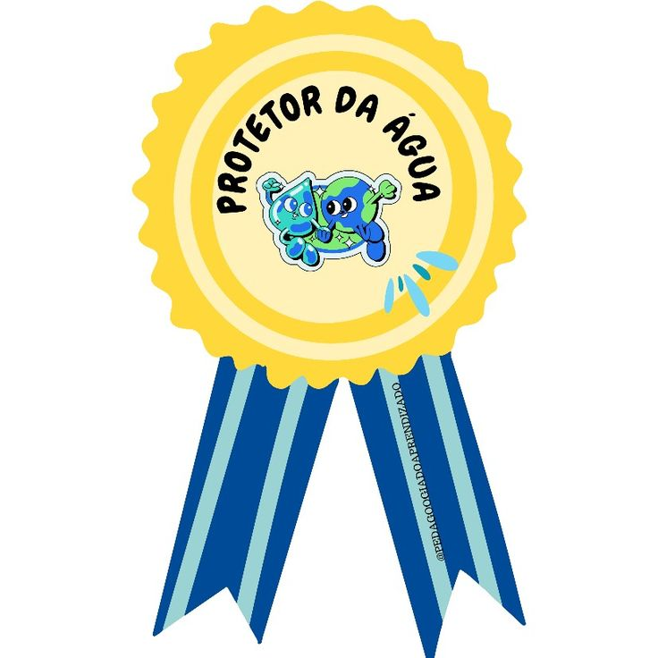

Meus projetos

Projeto S.O.S Matemática
Projeto desenvolvido com a turma da 1ª série do Ensino Médio do Colégio Estadual 14 de Dezembro. A proposta era trabalhar matemática básica de forma mais divertida e lúdica, por meio de gamificação e jogos educativos.

Guanhando o mundo
O programa "Ganhando o Mundo" do estado do Paraná é uma iniciativa que promove a troca cultural, educativa e profissional entre jovens paranaenses e diferentes países ao redor do mundo." .

Projeto de Conferência de Estocolmo
Projeto futuramente desenvolvido sobre a concientizacão da água e sustentabilidade, .